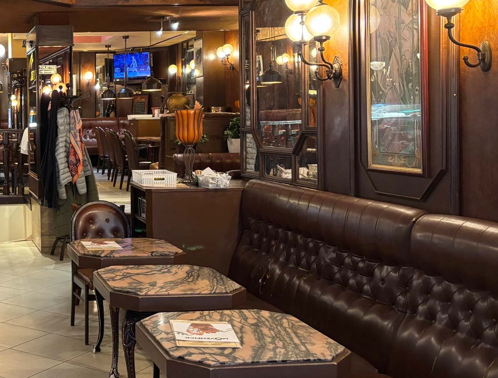
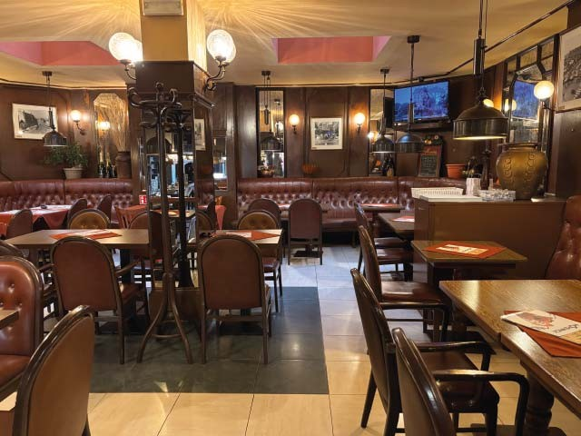
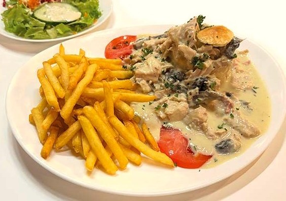
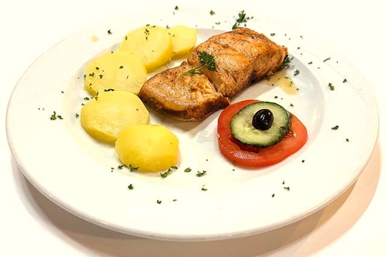
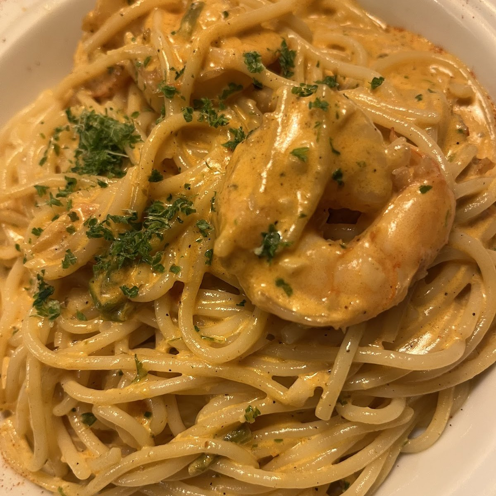
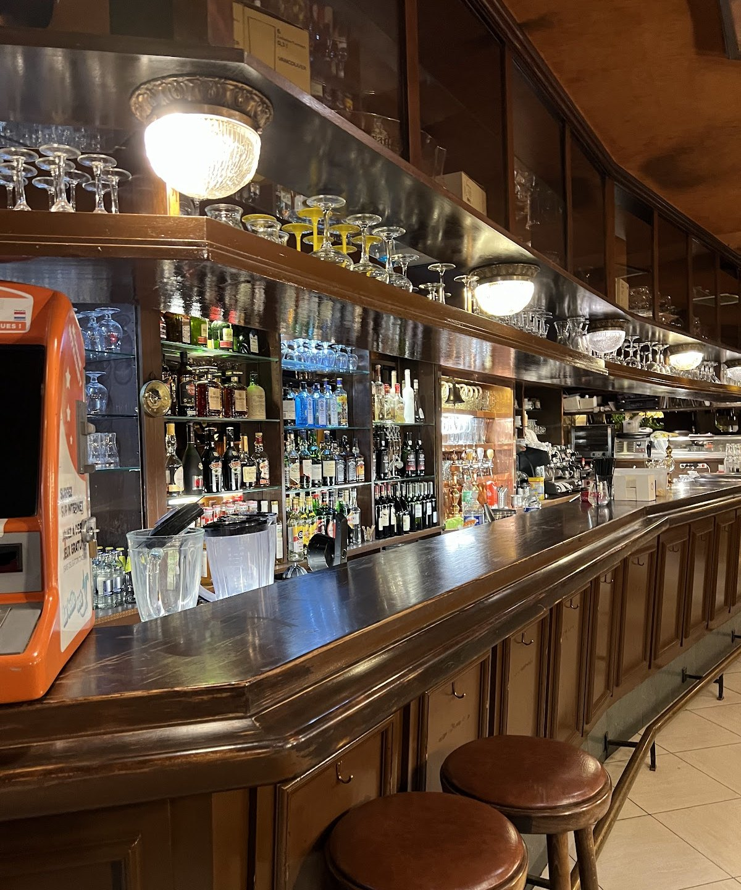
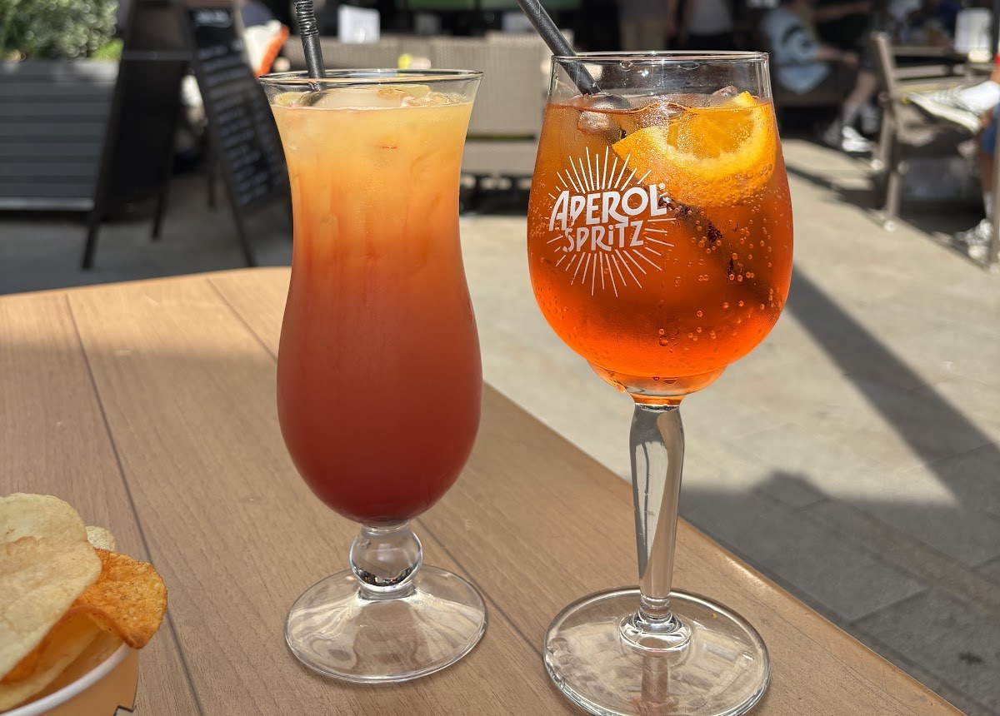

Brasserie française sur la place de Paris, depuis 1972.
La maison
L’une des plus anciennes brasseries du Luxembourg.
Le Bistrot est sur la place de Paris depuis 1972. La salle a gardé ses banquettes de cuir capitonnées, ses boiseries et ses appliques en globe.
On y vient pour le petit-déjeuner, le déjeuner ou le dîner : une cuisine française de brasserie, et un plat du jour du lundi au vendredi midi.

À table
La carte
Cuisine française de brasserie, servie midi et soir.
Plat du jour du lundi au vendredi, à midi.
Viandes
Servies avec frites et salade mixte.

Autres plats

Pâtes

Salades
Omelettes et snacks
Glaces et desserts
Une carte des allergènes est disponible sur place.

Au comptoir
Les cocktails de la maison.
La carte des cocktails se boit au comptoir ou en terrasse, sur la place.
- Aperol Spritz
- Hugo
- Mojito
- Caipirinha
- Cuba Libre
- Margarita
- Margarita Strawberry
- Tequila Sunrise
- Piña Colada
- Paradise Dream
- Swimming Pool
Sans alcoolVirgin Hugo, Blue Hawai, Coconut King.
Good Food — Great Friends — Terrasse — Football — Good Vibes
La terrasse
En plein cœur de la place de Paris.
Une terrasse agréable pour les beaux jours d’été, à deux pas de la gare.

Un mariage, un baptême, un anniversaire ?
Pour un évènement ou une soirée entre amis ou en famille, contactez la maison à l’avance pour réserver.
Samedi, dimanche et jours fériés, 10h – minuitEn hiver, la maison ferme plus tôt.